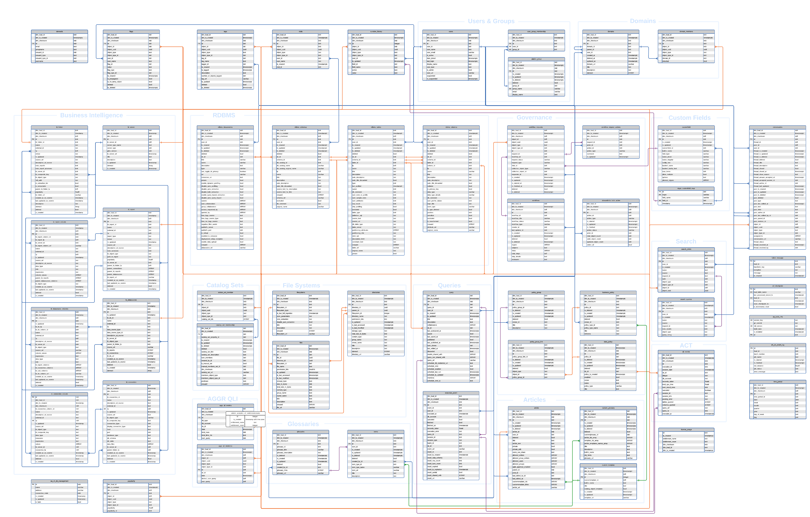
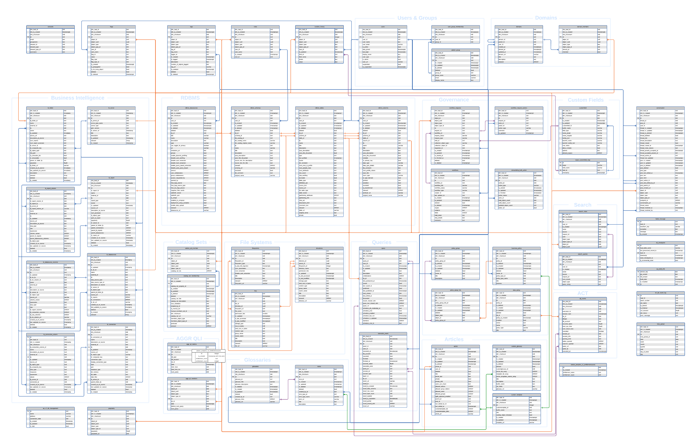
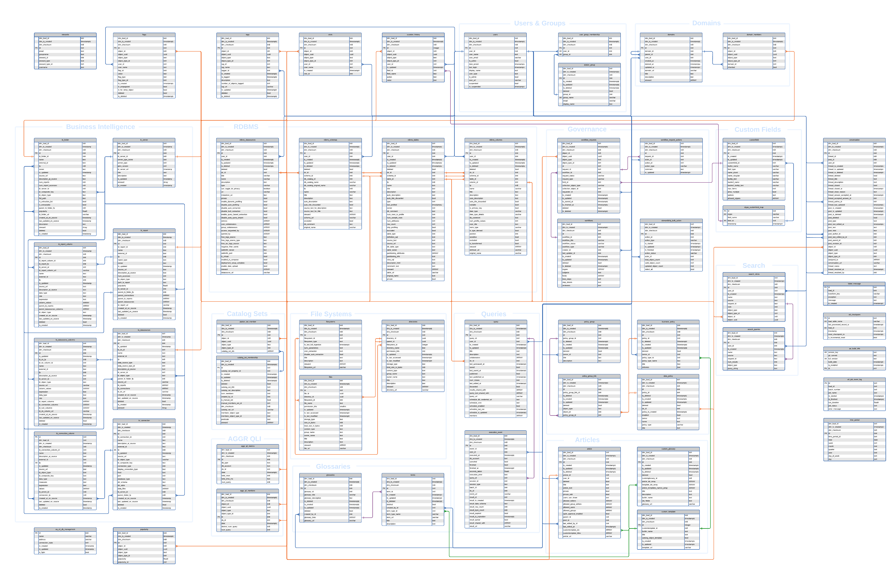
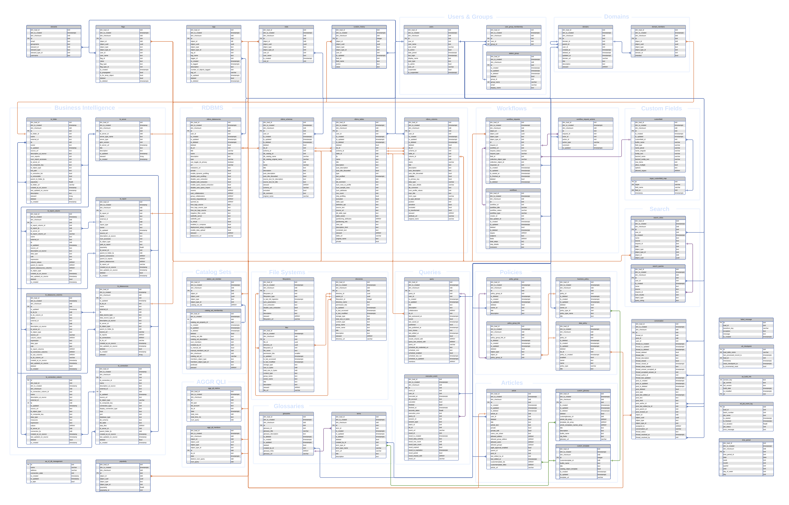
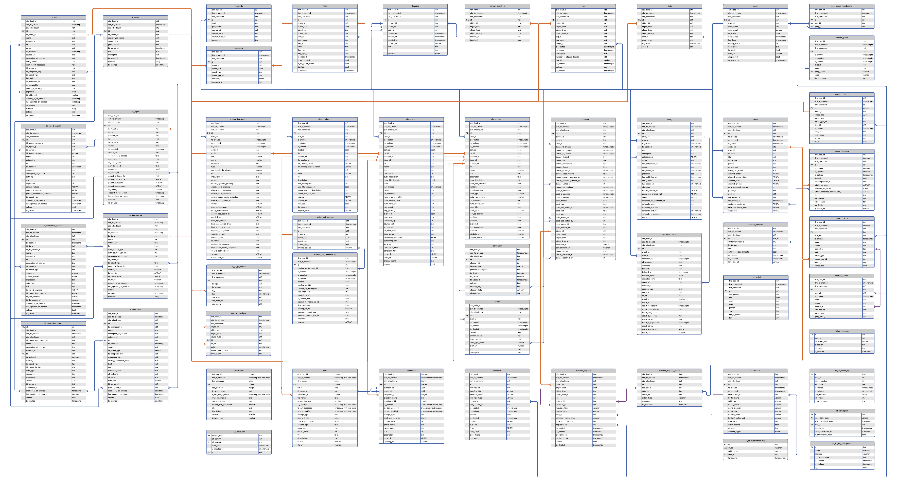
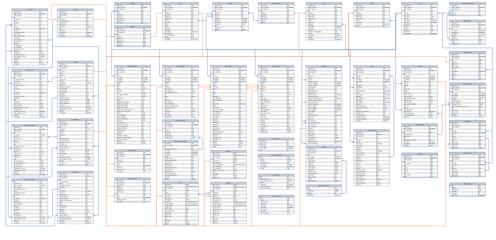
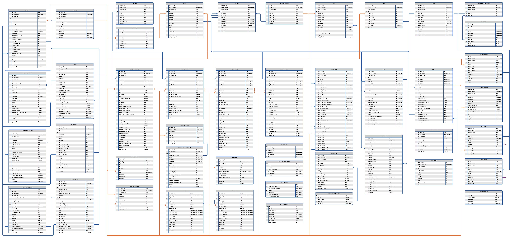
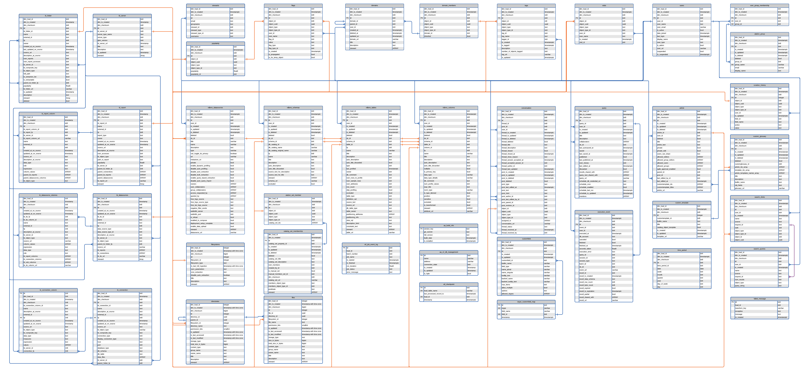
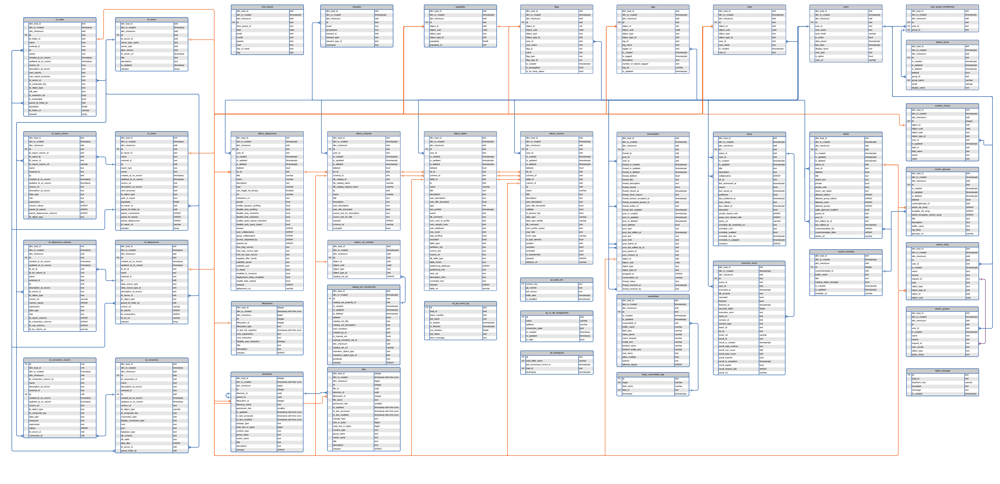

Alation Analytics V2 Database Model¶
Alation Cloud Service Applies to Alation Cloud Service instances of Alation
Customer Managed Applies to customer-managed instances of Alation
Applies from version 2020.3
Schema and Tables Explained¶
The Alation Analytics V2 package includes:
A data dictionary with descriptions of all tables and recommendations on how to do JOINs.
Sample queries — to be found in the Description field of the schema Public
Documentation in the form of Alation articles that explains the Alation Analytics V2 schema and some of the best practices for writing queries:
Introduction to Alation Analytics — Article describes tables in Alation Analytics V2 and relationships between them
Alation Analytics ERD — Article contains the entity relationship diagram (ERD) of the Alation Analytics V2 database
The data dictionary and the articles are available in Alation after the Alation Analytics V2 database has been initialized and this data source becomes available in the Alation catalog. Use Search to find the articles by their titles.
Alation Analytics V2 ERD¶
These images can be opened in a new browser tab for a detailed view (right-click on the image > open in a new tab).
Version 2023.3.3¶
{kind=link}
Version 2023.3.2¶
{kind=link}
Version 2023.3.1¶
{kind=link}
Version 2023.3¶
{kind=link}
Version 2023.1.7¶
{kind=link}
Version 2023.1.5¶
{kind=link}
Version 2023.1¶
{kind=link}
Versions 2022.2 to 2022.4¶
{kind=link}
Versions 2021.4 and 2022.1¶
{kind=link}
Version 2021.3¶
{kind=link}
Version 2021.2¶

Version 2021.1¶

Version 2020.4¶

Version 2020.3¶

Using Compose¶
Users with access to the Alation Analytics V2 database can query it in Compose after they connect with their individual account.
Alation Analytics V2 Training Videos¶
Note
These videos are part of the Alation University courses. Alation University features many training lessons about how to use and administer the Alation Data Catalog. Please email alation.university@alation.com to get access.